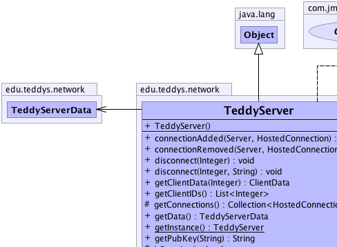
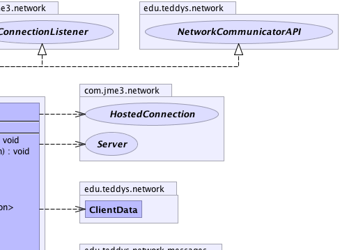
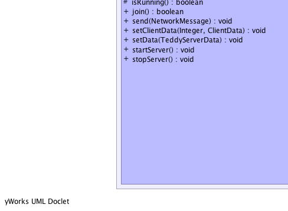
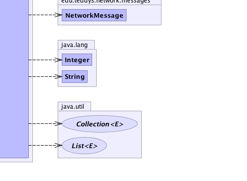

edu.teddys.network.TeddyServer
edu.teddys.network.TeddyServer
|
||||||||||
| PREV CLASS NEXT CLASS | FRAMES NO FRAMES | |||||||||
| SUMMARY: NESTED | FIELD | CONSTR | METHOD | DETAIL: FIELD | CONSTR | METHOD | |||||||||
java.lang.Object
public class TeddyServer
|  |  |
|  |  |
| Constructor Summary | |
|---|---|
TeddyServer()
|
|
| Method Summary | |
|---|---|
void |
connectionAdded(com.jme3.network.Server server,
com.jme3.network.HostedConnection conn)
Called when a new client has joined the server. |
void |
connectionRemoved(com.jme3.network.Server server,
com.jme3.network.HostedConnection conn)
Called when a client has been disconnected. |
void |
disconnect(java.lang.Integer client)
Destroy the active session for the specified user. |
void |
disconnect(java.lang.Integer client,
java.lang.String reason)
Call this function instead of disconnect(Integer) if you want to send a reason for disconnecting. |
ClientData |
getClientData(java.lang.Integer id)
Return the client data specified by the ID in the current server context. |
java.util.List<java.lang.Integer> |
getClientIDs()
|
protected java.util.Collection<com.jme3.network.HostedConnection> |
getConnections()
|
TeddyServerData |
getData()
|
static TeddyServer |
getInstance()
|
java.lang.String |
getPubKey(java.lang.String pubKeyClient)
Get the public key from the server for encryption reasons. |
protected boolean |
isRunning()
Check if the server is currently running. |
boolean |
join()
Join a new client to the list of users. |
void |
send(NetworkMessage message)
Send messages to the server. |
void |
setClientData(java.lang.Integer clientID,
ClientData client)
Adds client data to the current list. |
void |
setData(TeddyServerData data)
|
void |
startServer()
Start the server. |
void |
stopServer()
This function safely stops the server. |
| Methods inherited from class java.lang.Object |
|---|
clone, equals, finalize, getClass, hashCode, notify, notifyAll, toString, wait, wait, wait |
| Constructor Detail |
|---|
public TeddyServer()
| Method Detail |
|---|
public static TeddyServer getInstance()
public void startServer()
protected boolean isRunning()
public void stopServer()
public java.lang.String getPubKey(java.lang.String pubKeyClient)
NetworkCommunicatorAPI
getPubKey in interface NetworkCommunicatorAPIpubKeyClient - The key from the client so that the public key
from the server can be encrypted.
public void send(NetworkMessage message)
NetworkCommunicatorAPI
send in interface NetworkCommunicatorAPImessage - Some NetworkMessagepublic boolean join()
NetworkCommunicatorAPI
join in interface NetworkCommunicatorAPI
public void disconnect(java.lang.Integer client,
java.lang.String reason)
client - Client IDreason - Reason for the disconnectpublic void disconnect(java.lang.Integer client)
NetworkCommunicatorAPI
disconnect in interface NetworkCommunicatorAPIpublic TeddyServerData getData()
public void setData(TeddyServerData data)
public java.util.List<java.lang.Integer> getClientIDs()
public ClientData getClientData(java.lang.Integer id)
id - Client id
public void setClientData(java.lang.Integer clientID,
ClientData client)
public void connectionAdded(com.jme3.network.Server server,
com.jme3.network.HostedConnection conn)
connectionAdded in interface com.jme3.network.ConnectionListenerserver - conn - The client information.
public void connectionRemoved(com.jme3.network.Server server,
com.jme3.network.HostedConnection conn)
connectionRemoved in interface com.jme3.network.ConnectionListenerserver - conn - The client information.protected java.util.Collection<com.jme3.network.HostedConnection> getConnections()
|
||||||||||
| PREV CLASS NEXT CLASS | FRAMES NO FRAMES | |||||||||
| SUMMARY: NESTED | FIELD | CONSTR | METHOD | DETAIL: FIELD | CONSTR | METHOD | |||||||||